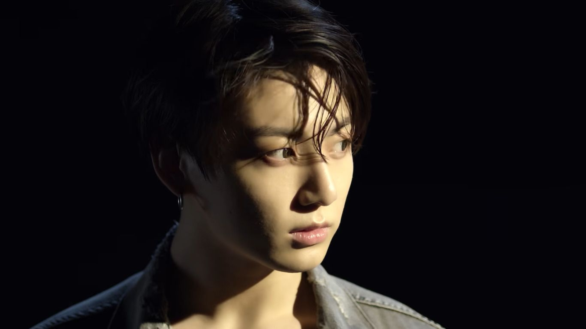
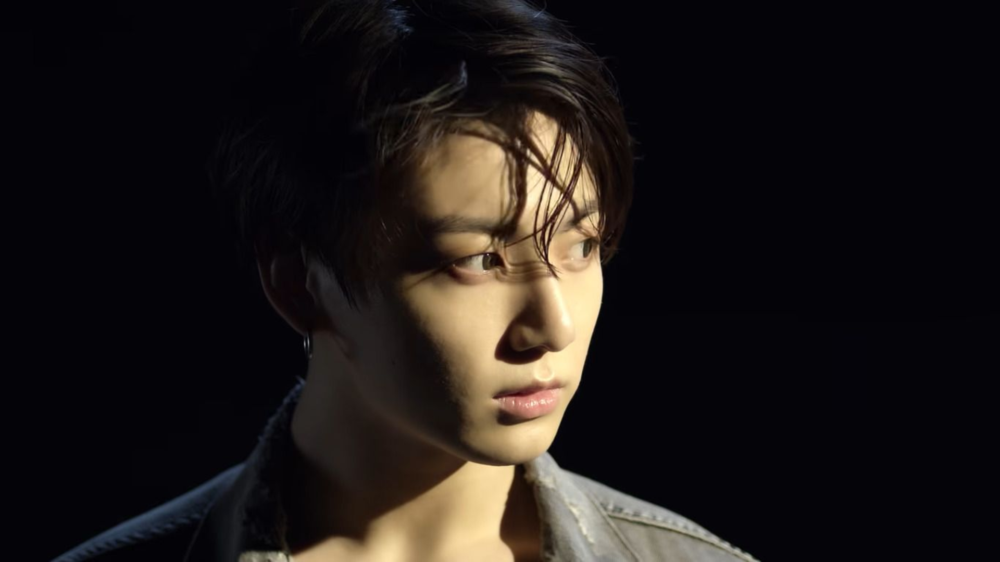

Vote for Jungkook!
Vote for “Left and Right” at the People’s Choice Awards for: “Collaboration of ” and “Music Video of ”.
Vote 

Jungkook is a singer, songwriter, and dancer. He is the main vocalist, center, lead dancer, and sub rapper of the biggest band in the world, BTS .
In , Jungkook officially started his career as a solo artist and announced that he is working on his solo album.


Vote for “Left and Right” at the People’s Choice Awards for: “Collaboration of ” and “Music Video of ”.
VoteJungkook will receive the “Eternal Artist Award” at the Melon Music Awards! The MMAs will air on .
Jungkook has been chosen as Audacy’s “Artist of the Summer”, !